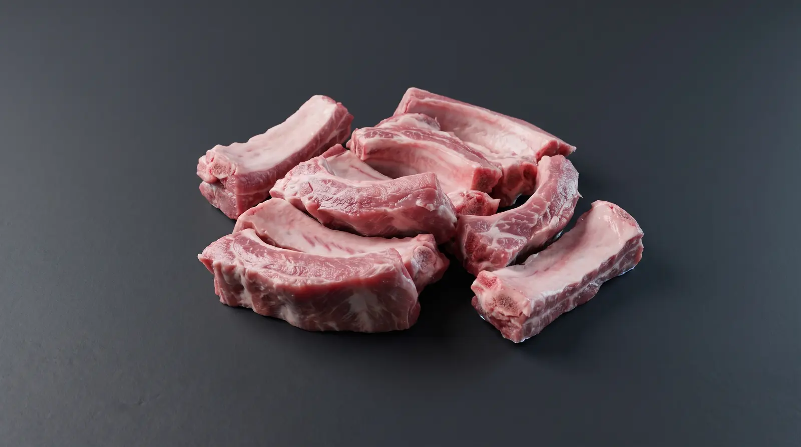

MaskaDistribution
Regional distribution
The right route, from our dock to your kitchen.
Business orders follow a refrigerated delivery route. Online-shop orders follow another path: warehouse pickup.
Currently published service areas
- 01Saint-Hyacinthe
- 02Montérégie
- 03Eastern Townships
- 04Centre-du-Québec
SERVICE TERRITORY
Refrigerated fleet departing from Saint-Hyacinthe
Tracked routes with strict cold-chain control across Montérégie, Estrie and Centre-du-Québec.
Which path matches your order?
Two services. One important distinction.
Choose your region and order type to see the right instructions. An advisor always confirms eligibility and scheduling.
MASKA / LOGISTIQUE
Refrigerated delivery for business orders.
Your region is in Maska’s published service area. Contact an advisor to confirm your address, products, delivery day and terms.
Pickup point and administration
3505 Avenue Bérard, Saint-Hyacinthe, Quebec J2S 0A2From order to receiving
A clear order path.
- 01
The request
Products, quantities, formats, address and receiving constraints.
- 02
The confirmation
An advisor confirms products, terms and scheduling.
- 03
The delivery
Confirmed business orders are delivered by refrigerated truck.
IMPORTANT / IMPORTANT
Online shop: no delivery.
This distinction is shown clearly to prevent an order based on the wrong expectation. Refrigerated delivery applies to confirmed business orders, not the online-shop cart.
FAQ
FAQ
Can I get an exact delivery day on this site?
No. Days and lead times depend on your address and order. An advisor must confirm them.
Can my online-shop cart be delivered?
No. The shop states that all its orders must be picked up at the Saint-Hyacinthe warehouse.
My address is outside the three regions. What should I do?
Call the team before planning your supply. The site does not assume any exceptions.
Where is the pickup warehouse?
At 3505 Avenue Bérard, Saint-Hyacinthe, Quebec J2S 0A2.
LES VIANDES MASKA
Let’s match your order to the right route.
A few details about your business and address help the advisor respond more efficiently.